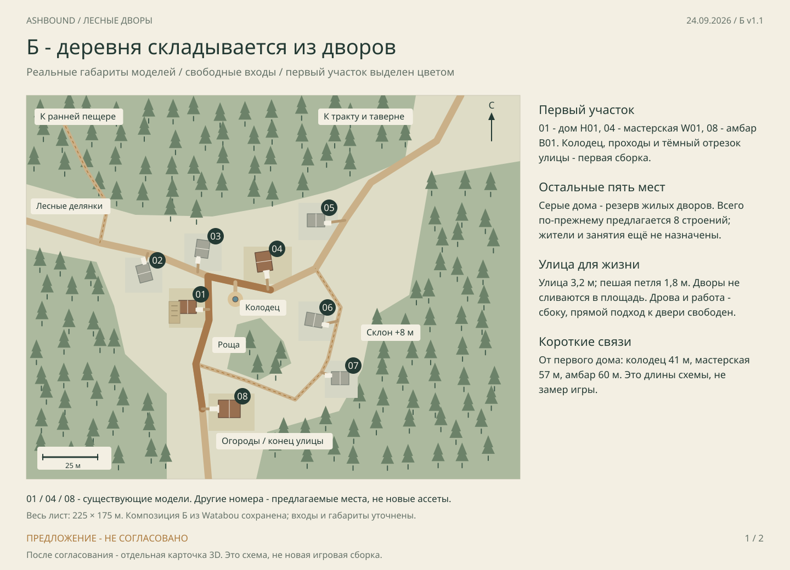
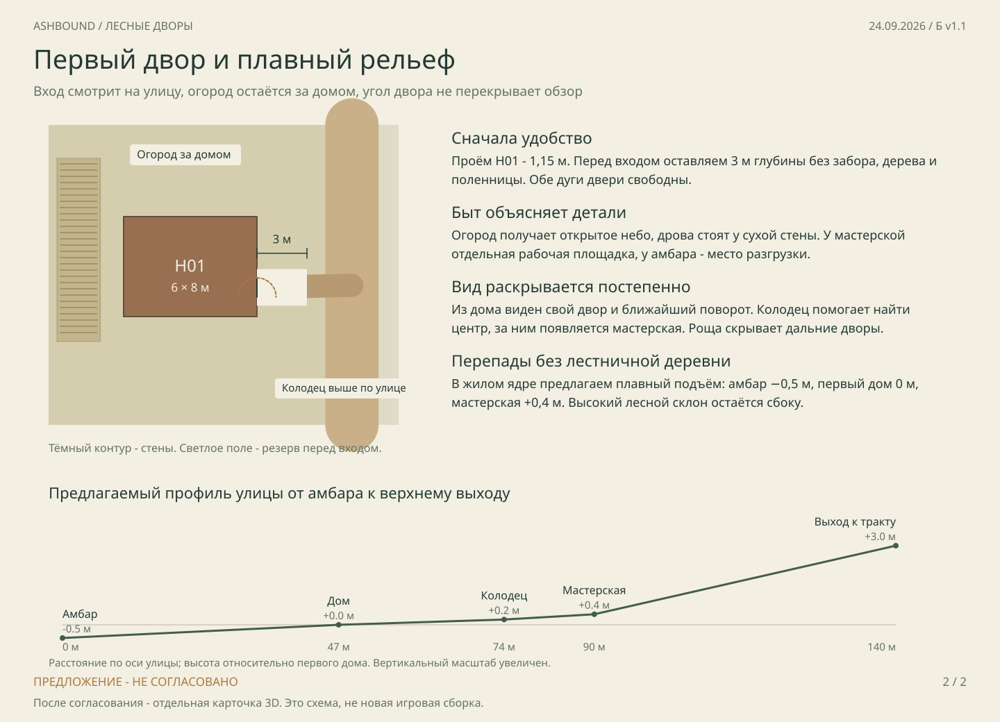
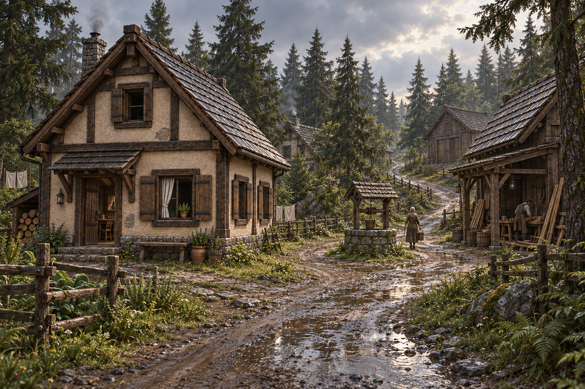

Предложение для согласования · 24 сентября 2026
Б v1.1 · Лесные дворы
Следующий участок собирает дом, мастерскую и амбар в поселение. Сохраняем извилистую улицу и отдельные дворы; уточняем настоящие габариты, входы и свободное место перед дверями.


Что уже принято, а что предлагается
Приняты направление Б и семейство зданий; двери 0.22.1 открываются от героя. Эта редакция предлагает точную расстановку, ширину проходов и небольшие перепады высоты. Она ещё не разрешает размещать весь посёлок в игре.
Опора атмосферы
